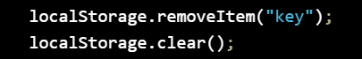
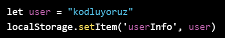
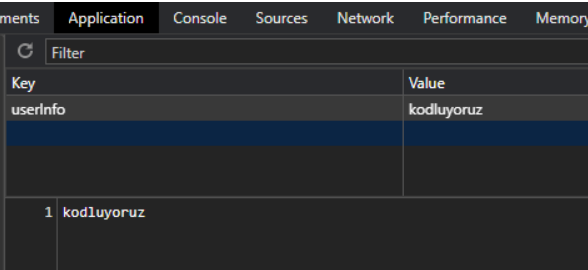
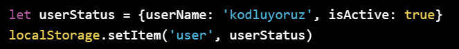
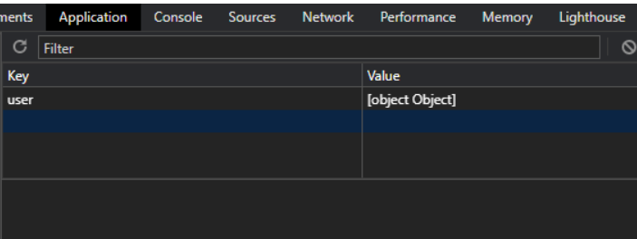

Web Storage terimi web sayfasında yapılan değişikliklerin kaydının tutulmasına karşılık gelmektedir. Örneğin bir web sayfasında kayıt formu doldurulurken sayfanın kapatıldığını veya başka sayfaya geçtiğimizi varsayalım. Kayıt form sayfasına döndüğümüzde kayıtların kaybolması sinir bozucu bir durum olabilir. Bu durumun önüne geçmek için cookie yani çerez dediğimiz sistemlerle geçici veriler saklanabilmekteydi. Ancak bu çerez dosyalarının hem 4 kb ile sınırlı olması hem de üçüncü şahıslar tarafından kolay erişilebiliyor olması Local Storage teriminin yaygınlaşmasına neden olmuştur. HTML 5 ile birlikte web sayfaları veriyi yerel (local) veya tarayıcı (browser) içinde saklayabilir hale gelmiştir. Bu sayede eskiden cookie’ler ile yaptığımız işlemler daha güvenli ve daha hızlı şekilde yapılabilir hale gelmiştir. Daha hızlı çalışmasının nedeni artık veriler her sunucu istediğinde değil, sadece çağırıldıklarında gelmektedir. Veriler key/value şeklinde saklanmaktadır ve web sayfaları sadece kendi oluşturdukları verilere erişebilmektedir. Birçok tarayıcı Web Storage API yapısıyla uyumlu şekilde çalışabilmektedir.
HTML 5 ile tarayıcılar iki tane yerel kayıt türünü desteklemektedir.
localStorage built-in fonksiyonları ile veriler üzerinde işlem yapmak oldukça kolaydır. setItem metodu kayıt eklemek için kullanılmaktadır. Bu metot iki parametre almaktadır. Bunların ilki ‘key’ yani anahtar adı ikincisi ise ‘value’ yani o anahtara karşılık gelen değeri ifade etmektedir.
Eğer daha önce belirttiğiniz bir anahtarı kullanırsanız kaydetmek için veri eski kaydın üzerine yazılacaktır. Veriniz güncellenmiş olacaktır. Veriyi kontrol edip yoksa kaydetmek isterseniz. verinin oluşturulup oluşturulmadığını kontrol etmeniz yeterli olacaktır. Verileri kaydederken sadece string biçiminde kayıt yapıldığını bilmemiz gerekmektedir. Karmaşık bir veriyi kaydetmek istediğinizde toString() metodu çalıştırılmalı ve üretilen değer kaydedilmelidir. Json verisini kaydetmek içinse JSON.stringify() metodu kullanılmalıdır.
localStorage üzerinde kayıtlı olan anahtarları okumak için getItem metodu kullanılır. getItem metodu anahtar adını kendisine parametre olarak alıp geriye değeri döndürmektedir.
Eğer veri daha önce kaydedilmeyen bir veriyi okumaya çalıştığımızda null değeri geri dönmektedir.
Verileri silmek için iki tane metot kullanılmaktadır. Tüm verileri silmek istiyorsak clear() metodunu kullanmamız gerekir. Şayet istediğimiz bir anahtarı silmek istiyorsak removeItem() metodunu kullanmamız gerekmektedir. removeItem metodu kendisine silinecek anahtarı parametre olarak almaktadır.

Veri silindikten sonra değeri null olarak gözükmektedir.
User objesini localStorage'da tutmak için setItem() fonksiyonu yukarıdaki gibi kullanılabilir. localStorage içindeki görüntüsü aşağıda verilmiştir. Ancak daha kompleks objeler için bu kod satırı yetersizdir.

Veri silindikten sonra değeri null olarak gözükmektedir.


Yukarıdaki komutun localStorage içerisindeki karşılığı aşağıdaki gibidir.

Bunun sebebi localStorage içindeki bilgilerin key: value şeklinde, yalnızca string türünde değerler ile saklanmasıdır. İlk örnekteki user değişkeni userInfo bilgisine atanabilir ancak userStatus bir obje olduğundan yukarıdaki görseldeki sonuçla karşılaşırız. Bunu önlemek için userStatus objesini stringe çevirmek gereklidir.